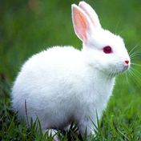

| No. | Nama | Foto | Cari di Google |
|---|---|---|---|
| 1 | Ayam | |
Telusuri |
| 2 | Angsa | |
Telusuri |
| 3 | Bebek | |
Telusuri |
| 4 | Domba | |
Telusuri |
| 5 | Kalkun | |
Telusuri |
| 6 | kambing | |
Telusuri |
| 7 | kelinci |  | Telusuri |
| 8 | kerbau | |
Telusuri |
| 9 | kuda | |
Telusuri |
| 10 | sapi | |
Telusuri |